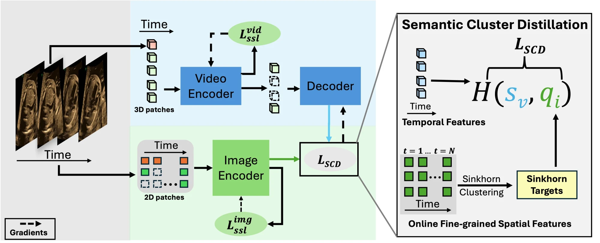
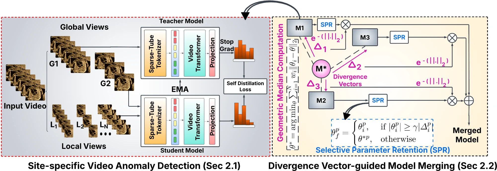
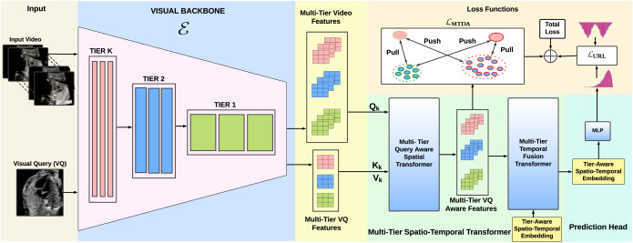
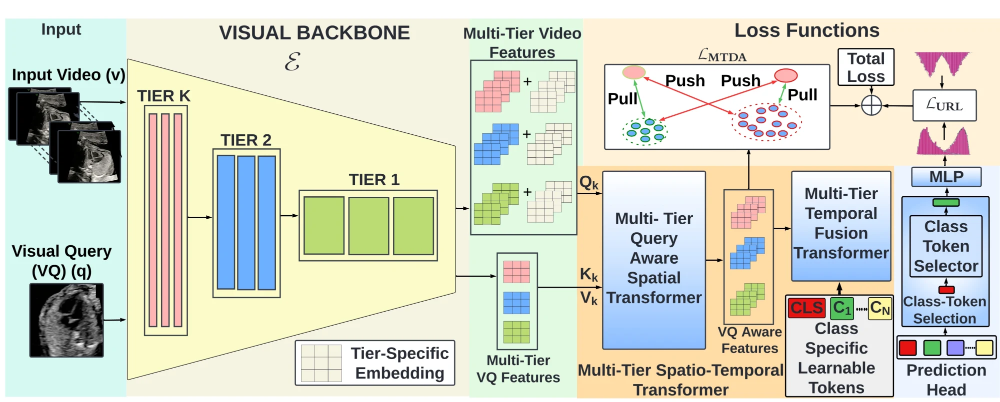
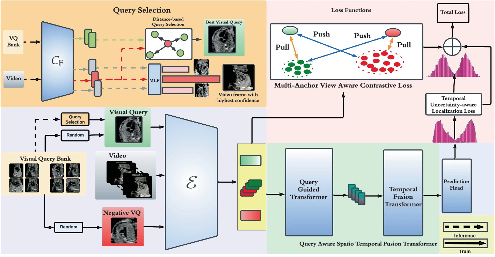
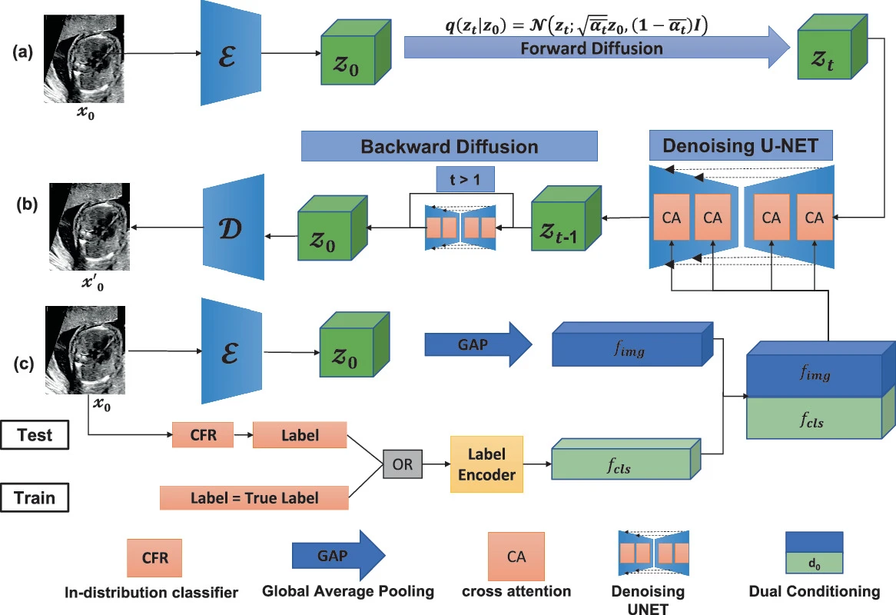

Foundation-model post-training
Supervised fine-tuning, preference optimization, and reinforcement learning for multimodal models.
Multimodal foundation models for video
Research Scientist II Amazon Science
Visiting Researcher University of Oxford
My current work at Amazon Science focuses on post-training foundation models and building reliable reasoning systems. I am particularly interested in supervised fine-tuning, reinforcement learning, and multimodal models that can understand video.
I completed my DPhil in Engineering Science at the University of Oxford, supervised by Professor Alison Noble and supported by the Athena-Bronze Scholarship. My doctoral research centered on long-video understanding, including temporal localization, self-supervised representation learning, and multimodal learning. I developed these methods primarily for fetal ultrasound, with the goal of supporting earlier and more reliable detection of congenital heart disease.
Before joining Amazon full-time, I interned at Amazon Science as an Applied Scientist II. There, I developed text-only training strategies for Video-LLMs to reduce their dependence on large paired video-text datasets.
Before my DPhil, I was a Data Scientist at THSTI, Government of India, where I worked under Professor Shinjini Bhatnagar. Together with clinicians and public health researchers, I developed models for preterm birth prediction, gestational-age estimation, and privacy-preserving ultrasound.
Across these roles, the common thread in my work is learning effectively from limited supervision and translating research into systems that remain useful in real-world settings. I am always happy to connect about research, collaborations, and new ideas.
Research
Supervised fine-tuning, preference optimization, and reinforcement learning for multimodal models.
Temporal grounding, representation learning, and world models for long, unstructured video.
Reliable multimodal systems for clinical imaging, early detection, and decision support.
Experience
Seven years spanning applied research in industry and doctoral work at Oxford.
Amazon Science · Seattle
University of Oxford
University of Oxford · Noble Lab
Amazon Science · Berlin
THSTI · Government of India
Selected work
Methods that learn useful temporal structure from complex, real-world video.

NeurIPS 2025
Self-supervised video representations through online cluster distillation.

MICCAI 2025
Zero-shot anomaly detection with privacy-preserving model merging.

Medical Image Analysis 2025
Visual query-based localization in long fetal ultrasound video.

AAAI 2025
Class-aware token transformers for anatomical clip localization.
What’s new
Research output
medRxiv 2026
Rishabh Chanian*, Divyanshu Mishra*, Richa Jain, et al.
Manuscript under review
Divyanshu Mishra, Simon Sternig, Rakshith Shetty, and Erkut Gundogdu
MICCAI 2025 · Co-first author
Pramit Saha*, Divyanshu Mishra*, Netzahualcoyotl Hernandez-Cruz, et al.
Medical Image Analysis 2025
Divyanshu Mishra, Pramit Saha, He Zhao, Netzahualcoyotl Hernandez-Cruz, Olga Patey, Aris T. Papageorghiou, and J. Alison Noble
Medical Image Analysis 2025 · Co-first author
Mohammad M. K. Sarker*, Divyanshu Mishra*, Mohammed Alsharid*, et al.
AAAI 2025
Divyanshu Mishra, Pramit Saha, Netzahualcoyotl Hernandez-Cruz, et al.
medRxiv 2024
Divyanshu Mishra, V. Chandramohan, N. Sharma, et al.

MICCAI 2024
Divyanshu Mishra, Pramit Saha, He Zhao, Olga Patey, Aris T. Papageorghiou, and J. Alison Noble

MICCAI 2023
Divyanshu Mishra, He Zhao, Pramit Saha, et al.